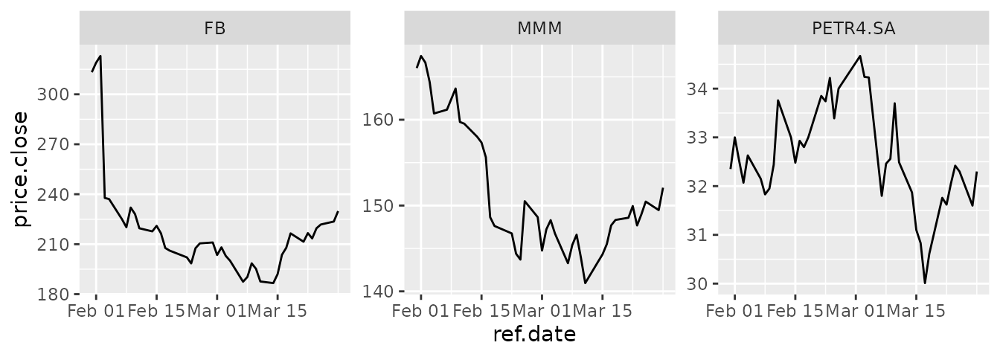

BatchGetSymbols-vignette.RmdOne of the great things of working in finance is that financial datasets from capital markets are freely available from sources such as Yahoo Finance. This is an excelent feature for building up to date content for classes and conducting academic research.
In the past I have used function GetSymbols from the CRAN package quantmod in order
to download end of day trade data for several stocks in the financial
market. The problem in using GetSymbols is that it does not aggregate or
clean the financial data for several tickers. In the usage of
GetSymbols, each stock will have its own xts object with
different column names and this makes it harder to store data from
several tickers in a single dataframe.
Package BatchGetSymbols is my solution to this problem. Based on a list of tickers and a time period, BatchGetSymbols will download price data from yahoo finance and organize it so that you don’t need to worry about cleaning it yourself.
As a simple exercise, let’s download data for three stocks, facebook (FB), 3M (MMM), PETR4.SA (PETROBRAS) and abcdef, a ticker I just made up. We will use the last 60 days as the time period. This example will show the simple interface of the package and how it handles invalid tickers.
if (!require(BatchGetSymbols)) install.packages('BatchGetSymbols')## Loading required package: BatchGetSymbols## Loading required package: rvest## Loading required package: dplyr##
## Attaching package: 'dplyr'## The following objects are masked from 'package:stats':
##
## filter, lag## The following objects are masked from 'package:base':
##
## intersect, setdiff, setequal, union##
library(BatchGetSymbols)
# set dates
first.date <- Sys.Date() - 60
last.date <- Sys.Date()
freq.data <- 'daily'
# set tickers
tickers <- c('FB','MMM','PETR4.SA','abcdef')
l.out <- BatchGetSymbols(tickers = tickers,
first.date = first.date,
last.date = last.date,
freq.data = freq.data,
cache.folder = file.path(tempdir(),
'BGS_Cache') ) # cache in tempdir()##
## Running BatchGetSymbols for:##
## tickers =FB, MMM, PETR4.SA, abcdef
## Downloading data for benchmark ticker
## ^GSPC | yahoo (1|1) | Not Cached | Saving cache
## FB | yahoo (1|4) | Not Cached | Saving cache - Got 100% of valid prices | Good job!
## MMM | yahoo (2|4) | Not Cached | Saving cache - Got 100% of valid prices | OK!
## PETR4.SA | yahoo (3|4) | Not Cached | Saving cache - Got 95% of valid prices | Nice!
## abcdef | yahoo (4|4) | Not Cached - Error in download..After downloading the data, we can check the success of the process for each ticker. Notice that the last ticker does not exist in yahoo finance and therefore results in an error. All information regarding the download process is provided in the dataframe df.control:
print(l.out$df.control)## # A tibble: 3 × 6
## ticker src download.status total.obs perc.benchmark.dates threshold.decis…
## <chr> <chr> <chr> <int> <dbl> <chr>
## 1 FB yahoo OK 41 1 KEEP
## 2 MMM yahoo OK 41 1 KEEP
## 3 PETR4.SA yahoo OK 40 0.951 KEEPMoreover, we can plot the daily closing prices using ggplot2:
library(ggplot2)
p <- ggplot(l.out$df.tickers, aes(x = ref.date, y = price.close))
p <- p + geom_line()
p <- p + facet_wrap(~ticker, scales = 'free_y')
print(p)
The package was designed for large scale download of financial data. An example is downloading all stocks in the current composition of the SP500 stock index. The package also includes a function that downloads the current composition of the SP500 index from the internet. By using this function along with BatchGetSymbols, we can easily import end-of-day data for all assets in the index.
In the following code we download data for the SP500 stocks for the last year. The code is not executed in this vignette given its time duration, but you can just copy and paste on its own R script in order to check the results. In my computer it takes around 5 minutes to download the whole dataset.
library(BatchGetSymbols)
first.date <- Sys.Date()-365
last.date <- Sys.Date()
df.SP500 <- GetSP500Stocks()
tickers <- df.SP500$Tickers
l.out <- BatchGetSymbols(tickers = tickers,
first.date = first.date,
last.date = last.date)
print(l.out$df.control)
print(l.out$df.tickers)